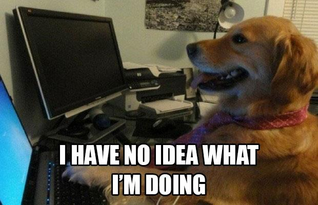
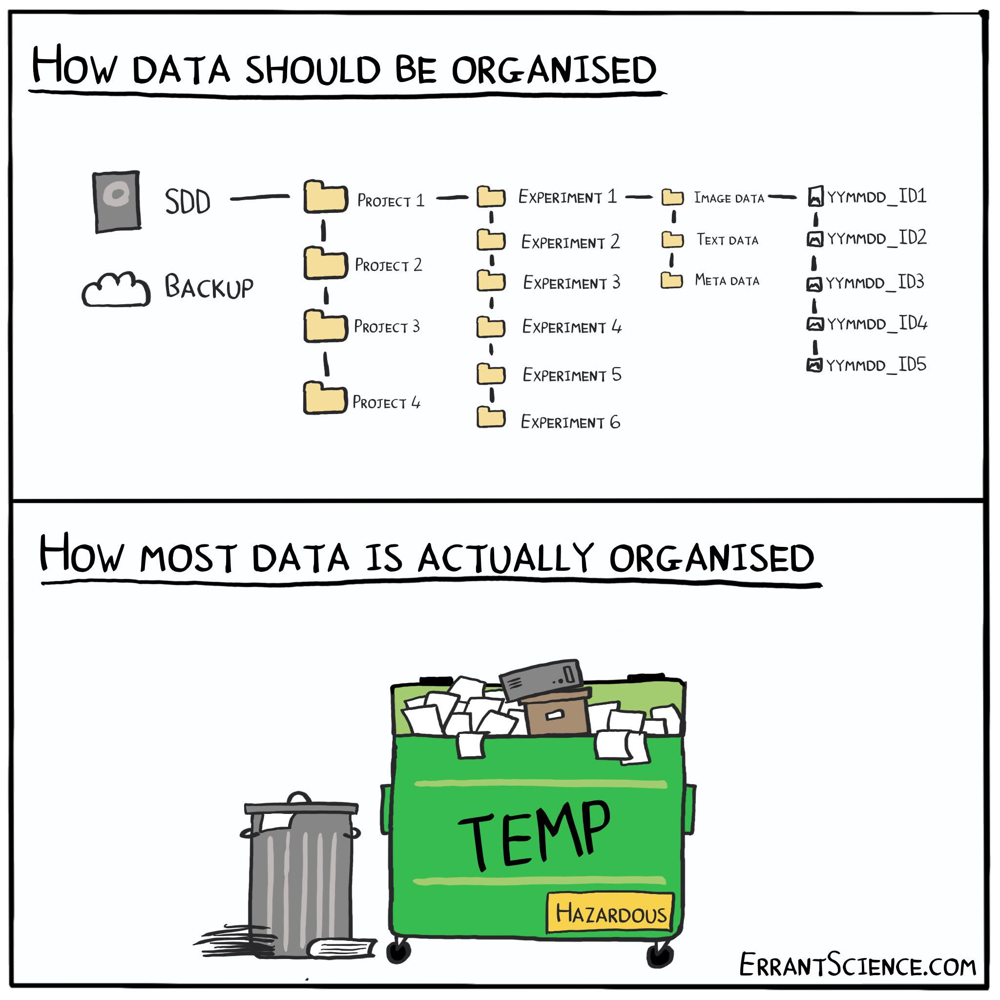
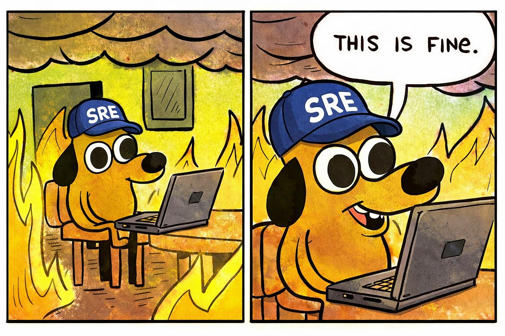
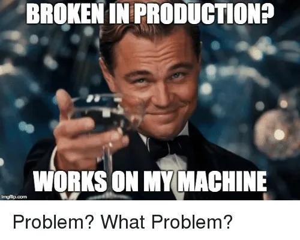
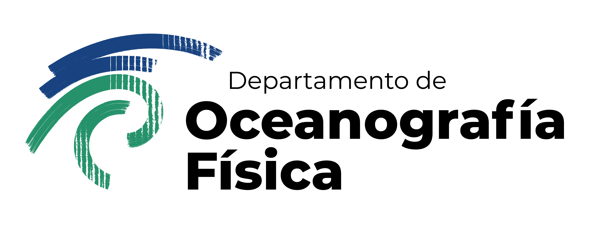

Introducción a herramientas computacionales para Oceanografía Física
2026-09-14
Al final del minicurso queremos poder seguir un flujo de trabajo como::
Se trata de empezar a trabajar de forma reproducible.
Estudiante de primer ingreso al DOF. Su asesora le da tres tipos de datos:
Su pregunta inicial es:
¿Cómo se relacionan ENSO, la SST regional y la precipitación local durante los últimos 30 años?
Hoy todavía no analizaremos los datos.
Hoy aprenderemos a:
Tarde o temprano van a necesitar:
¡La terminal conecta todo!
María Luisa recibió una carpeta llamada:
Dentro hay archivos mezclados:
Su primera tarea es entender qué tiene.
Durante el minicurso trabajaremos con tres fuentes:
(Ojo que hoy son archivos con datos sintéticos)
Lo importante por ahora es aprender a:
Al final de la sesión 1 tendremos una carpeta que se verá así:
Éste será el proyecto que seguiremos usando en las sesiones 2 y 3.
Las computadoras realizan cuatro funciones básicas:
Interfaces: desde conexiones cerebro-computadora y voz → hasta pantallas, ratones, teclados.
Las interfaces gráficas (GUI) son comunes desde los 80s; origen en los 60s con Doug Engelbart y “La Madre de todos los Demos”.
Antes de la GUI → solo existía la interfaz de línea de comandos (CLI).
Entrada/salida limitada a texto (teclado estándar, impresoras de línea).
Basada en el ciclo REPL: leer (read) → ejecutar (execute) → imprimir (print) → repetir (loop).
Terminal (shell): programa intermediario entre usuario y sistema operativo.
Ejecuta otros programas en lugar de hacer cálculos directamente.
Ejemplo popular: Bash (Bourne Again Shell) en Unix/Linux.
Ventajas del uso de la terminal (CLI):
¡Es una habilidad clave en computación científica, clusters y la nube!
La terminal es una interfaz de texto para hablar con la computadora.
Nos permite escribir comandos como:
La computadora responde con texto.
Abre una terminal:
Mac
Cmd + Space → escribir Terminal → Enter
Windows
tecla Windows → escribir Git Bash → Enter
Linux
Ctrl + Alt + T
En la terminal:
Este comando significa:
print working directory
Nos dice dónde estamos.
En cada momento la terminal está “parada” en un directorio.
A ese lugar le llamamos:
directorio de trabajo actual
Muchos comandos actúan sobre ese directorio.
Por eso pwd es nuestro primer comando de seguridad.
ls muestra el contenido del directorio actual.
También podemos pedir más información:
o distinguir directorios:
Ejecuta:
Responde:
Ejemplo:
Luego:
.. significa:
el directorio que está arriba del actual
. significa:
el directorio actual
o simplemente:
~ representa tu directorio personal.
cd .. y ya no sabes dónde estás
Usa pwd :-)
Una ruta relativa depende de dónde estás:
Una ruta absoluta empieza desde la raíz del sistema:
Supón que estás en:
¿Qué comando te lleva a:
?
Opciones:
cd notascd ../notascd ../../notascd /notasRespuesta: cd ../notas
Usa la tecla Tab.
La terminal puede completar nombres de archivos y directorios.
Ejemplo:
Esto evita muchos errores de escritura.
Desde la carpeta del material:
También podemos listar sólo ciertos tipos de archivos:
El símbolo * significa:
cualquier secuencia de caracteres
Ejemplos:
Esto será muy útil cuando tengamos muchos archivos.
head muestra las primeras líneas de un archivo.
Para archivos grandes, es más seguro que abrir todo el archivo.
cat imprime el contenido completo.
Usarlo sólo con archivos pequeños.
wc -l cuenta líneas.
Esto sirve para revisar rápidamente el tamaño de un archivo de texto.
Usando la terminal, responde:
.csv hay?.nc hay?.csv?Comandos sugeridos:
Un proyecto reproducible separa:

Si todo vive en el mismo directorio, el análisis se vuelve frágil.
Desde donde quieras guardar tu trabajo:
Revisamos:
Revisamos:
Esperamos ver:
touch crea un archivo vacío si no existe.
Después:
Desde dentro de enso_baja/, si el material está al lado:
cp ../materiales_sesion1/descargas/*.csv data/
cp ../materiales_sesion1/descargas/*.nc data/
cp ../materiales_sesion1/environment.yml .Revisamos:
copia.
mueve o renombra.
Hoy preferimos copiar los datos originales.
Crea esta estructura:
Después copia los archivos .csv y .nc a data/.
Verifica con:
rm elimina archivos.
En la terminal normalmente no hay “papelera”.

¡Si borras algo con rm puede ser imposible recuperarlo!
No usaremos comandos de borrado recursivo hoy.
Antes de borrar:
Pregúntate:
¿Estoy donde creo que estoy?
> redirige la salida a un archivo.
Después:
El símbolo | se llama pipe.
Toma la salida de un comando y la usa como entrada del siguiente.
Crea un archivo llamado:
que contenga la lista de archivos dentro de data/.
Pista:

Un proyecto científico depende de software:
Un ambiente permite agrupar esas dependencias.
Para el curso usaremos algo como:
Después podemos revisar:
En Windows puede ser:
Primero asegúrate de estar en enso_baja/:
Luego:
Jupyter abrirá el proyecto desde ese directorio.
En JupyterLab:
notebooks/;exploracion_inicial.ipynb;Ejemplo:
En una celda de Python:
No importa si todavía no entiendes todos los detalles.
La idea es conectar Jupyter con la estructura del proyecto.
Hoy aprendimos a:
pwd;ls;cd;mkdir;touch;cp;head, cat, wc;*;Ya tenemos un proyecto organizado.
Ahora necesitamos abrir los datos.
Preguntas:
Antes de la siguiente sesión:
notebooks/exploracion_inicial.ipynb;No tienes que analizar nada todavía.
Sólo deja el proyecto listo.
